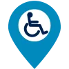
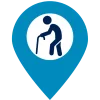
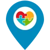
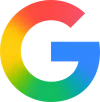

Baixe o aplicativo, experimente todas as funcionalidades e compartilhe sua opinião no formulário!
O IncluZone em ação
Encontre vagas acessíveis
direto
no
mapa
Registre vagas e construa uma cidade mais inclusiva
Sobre o IncluZone
Acessibilidade começa com informação.
O IncluZone é uma plataforma desenvolvida para facilitar a localização e o registro de vagas reservadas e pontos de acessibilidade urbana, reunindo informações em um mapa interativo de forma simples, rápida e acessível.
O projeto busca contribuir para uma cidade mais inclusiva, permitindo que informações sobre vagas destinadas a pessoas com deficiência (PcD), idosos, gestantes e pessoas com Transtorno do Espectro Autista (TEA) sejam encontradas com mais facilidade.

PcDPessoas com deficiência
IdososVagas para pessoas idosas- GestantesVagas para gestantes

TEATranstorno do Espectro Autista
Como funciona?
Por meio do aplicativo, o usuário pode visualizar as vagas cadastradas diretamente no mapa, utilizar filtros de acordo com o tipo de vaga e consultar informações como localização, endereço e imagem do local.
Também é possível contribuir com a plataforma realizando o pré-registro de novas vagas, ajudando a manter o mapa cada vez mais completo.
Tecnologia a favor da acessibilidade
O IncluZone utiliza diferentes tecnologias para tornar a experiência mais segura e eficiente.
OpenStreetMap é utilizado para a visualização e localização dos pontos no mapa, enquanto a Inteligência Artificial Gemini auxilia na análise das imagens enviadas durante o cadastro de uma vaga.
O sistema também conta com recursos como login com Google, geolocalização e armazenamento de informações, proporcionando uma experiência mais prática aos usuários.
- OpenStreetMap
- Gemini

Google
Pensado para ser acessível
A interface foi desenvolvida buscando uma navegação simples e intuitiva, incluindo recursos como ajuste do tamanho da fonte, contraste adequado, ícones de fácil identificação e organização visual.
Assim, pessoas com diferentes necessidades podem utilizar o aplicativo com maior facilidade.
Nosso objetivo
Mais do que mostrar pontos em um mapa, o IncluZone busca centralizar informações sobre acessibilidade urbana e incentivar a participação colaborativa dos usuários.
IncluZone — acessibilidade mais perto de todos.